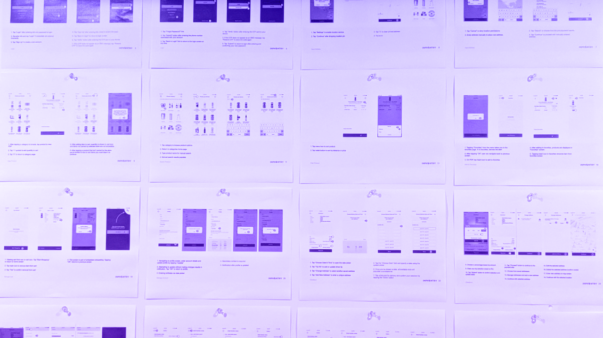
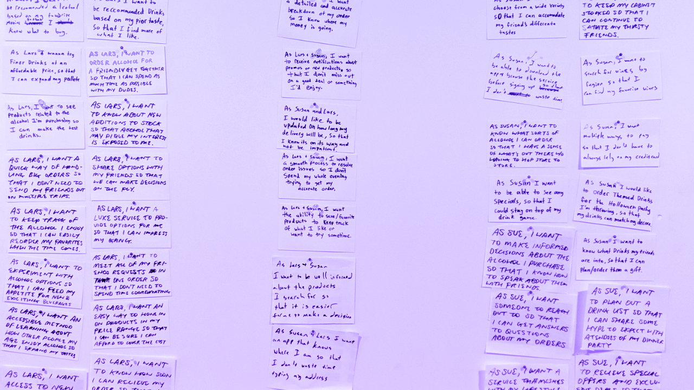
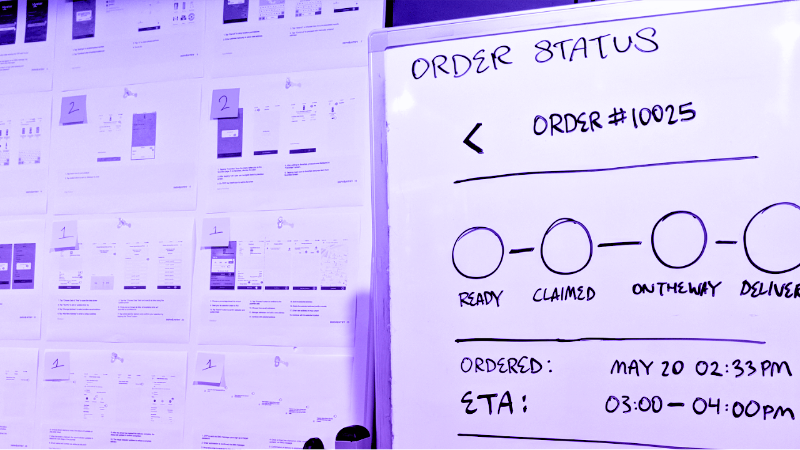
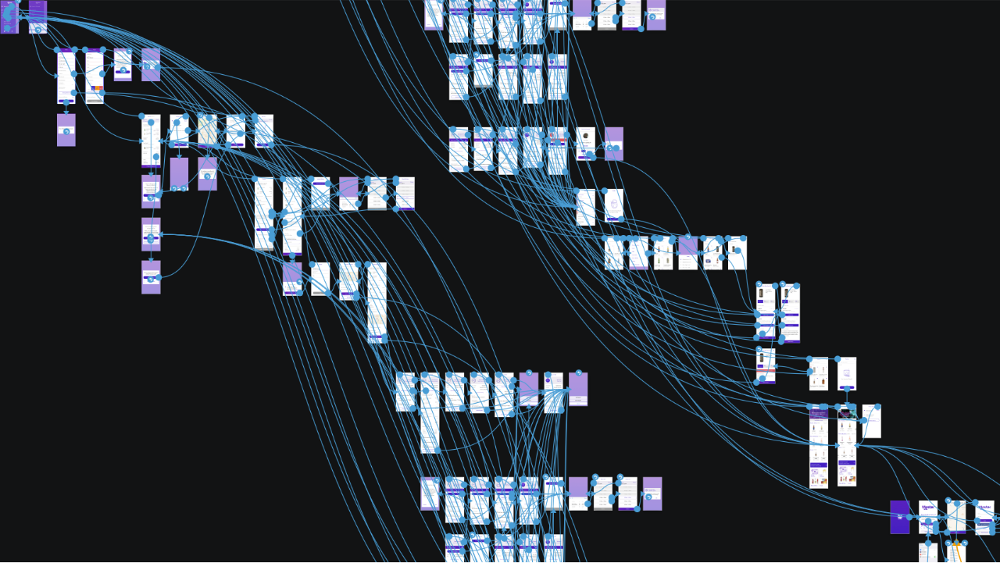

Tapster approached INPHANTRY with a service boasting a keg delivery and retrieval system.

First, we set out to distinguish this unique player in the business of alcohol delivery. Tapster's voice and image were born from competitive analysis, audience research, and rounds of creative iteration.
Once the looks were nailed in, the journey towards tightening the experience came into focus. We began with an audit of the inner workings of the app, analyzing every core user flow.
In order to push beyond the features of the first iteration, we held several user story creation sessions to imagine new scenarios. I worked with the creative director to create and organize user stories, plan sprints, and lay out a production timeline.
Identifying the essential components of the user journey allowed us the freedom to propose new features to augment the ordering process.
With weekly client check-ins we were constantly building new app flows. Wireframes that reached client approval made room for the next planned feature on the list. This allowed us to reveal design on a rolling basis, as well as share our plans for the next step.
Team
- PM: Abby Carlson
- Development: Jacob Roscoe, Kevin Ngo, Derek Tran
- Creative Direction: Regi Jacob & Kevin Lee
- Visual Design: Em Montoya
- UX/Design: Carson Halstead